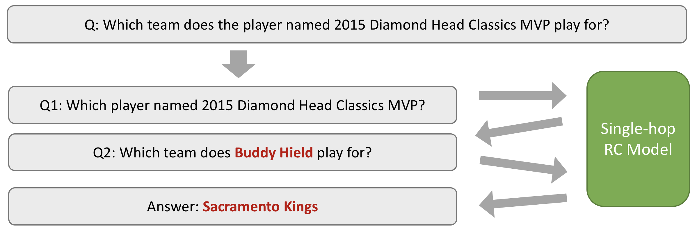

Answering Multi-hop Questions by Decomposition
Reference: Sewon Min, Victor Zhong, Luke Zettlemoyer, Hannaneh Hajishirzi.
"Multi-hop Reading Comprehension through Question Decomposition and Rescoring".
ACL 2019.
[Show Me Details!]

This demo is based on
DecompRC, the main model from our paper.
First,
DecompRC decomposes the question with respect to the reasoning type (bridging or intersection).
This module is trained on 200 multi-hop questions.
Then, each sub-question is answered by BERT-based single-hop reading comprehension model.
This module is trained on 105K single-hop questions.
If you want
DecompRC to decide on the reasoning type for you, it will go through a decomposition scorer to determine which reasoning type is best suitable for your question.
Paper: [
link] |
Code for the paper: [
link] |
Code for this demo: [
link]
For any question, please contact
Sewon Min.
Instruction
Select a question from HotpotQA, or write your own question with multiple paragraphs.
Remember, the answer to the question should be a span from one of paragraphs.
You can ask Bridging & Intersection questions. [What are they?]
Bridging requires finding the first-hop evidence in order to find another, second-hop evidence.
Example: Which team does the player named 2015 Diamond Head Classics MVP play for?
Desired Decomposition: (1) Which player named 2015 Diamond Head Classics MVP? (2) Which team does [ANSWER] play for?
Intersection requires finding an entity that satisfies two independent conditions.
Example: Stories USA starred which actor and comedian from ‘The Office’?
Desired Decomposition: (1) Stories USA starred which actor and comedian? (2) Which actor and comedian from ‘The Office’?
 Loading...
Loading...